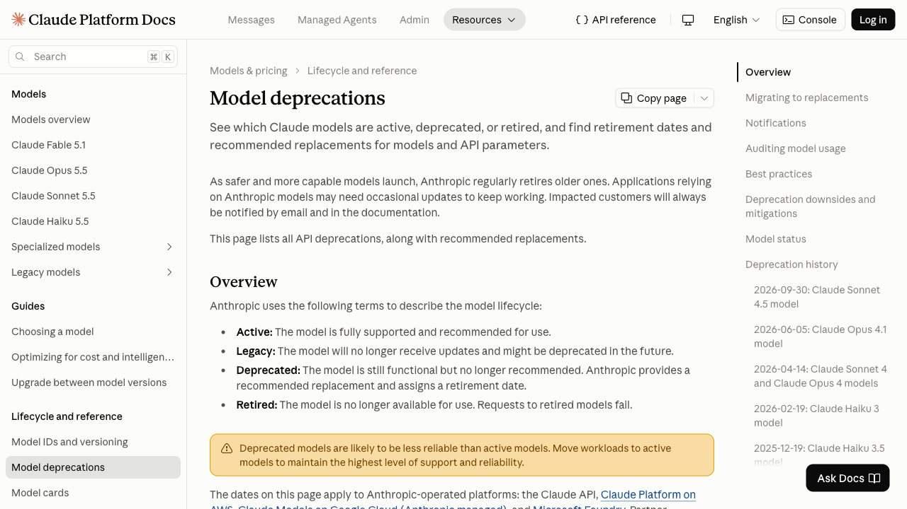

E l 14 de octubre de 2026 OpenAI puso fecha de apagado a GPT-4o. El 30 de septiembre Anthropic la puso a Sonnet 4.5. El 8 de octubre Google deprecó dos modelos de Gemini y empezó a redirigir sus peticiones a otros sin que nadie tenga que cambiar una línea. En tres semanas, los tres proveedores grandes han retirado o van a retirar modelos sobre los que mucha gente tiene cosas funcionando.
Esto no es una mala racha: es el ritmo normal del sector desde hace dos años, y seguirá. La pregunta útil, entonces, no es si te va a tocar, sino cuánto te va a costar cada vez. Y eso depende de cosas que se preparan antes, no el día del aviso.
Todo lo que sigue sobre plazos, estados y fechas está sacado de las páginas de deprecaciones y los registros de cambios de Anthropic, OpenAI y Google, consultados el 22 de octubre de 2026. Son documentos que esas empresas editan sin avisar, así que las fechas concretas conviene comprobarlas el día que vayas a usarlas; lo que no cambia tan rápido es la mecánica, que es de lo que va esta guía.
1. Lo que se rompe no es lo que crees
Un modelo retirado no se degrada: deja de existir. Anthropic lo dice sin rodeos en su página de deprecaciones — «las peticiones a modelos pasada la fecha de retirada fallarán». No hay respuesta peor, hay error. Y si eso está detrás de un formulario, de un agente que corre de noche o de una automatización que nadie mira, lo que se cae es el proceso entero, no una respuesta.
Pero el apagón limpio es el caso fácil, porque avisa de golpe y se arregla cambiando una cadena de texto. Los tres casos que de verdad cuestan tiempo son otros, y ninguno de los tres se parece a «el modelo ya no está»:
- El parámetro que desaparece. El modelo sigue ahí, pero deja de aceptar un ajuste que le llevabas pasando desde el primer día, y la llamada entera se cae con un error de validación.
- El modelo que te cambian por debajo. Tu petición no falla: se atiende con otro modelo. Nadie te manda un error, y la calidad de lo que sale cambia sin que haya nada que mirar en los registros.
- La fecha que se mueve. Te organizas la migración para una fecha que resulta no ser una fecha, sino un suelo — «no antes de» — y el plan se queda sin calendario.
Esta guía va de los cuatro —el apagón limpio y estos tres—, con lo que cada proveedor dice en su propia documentación, que es la única fuente que se mueve al mismo ritmo que los productos. Y va, sobre todo, de cómo dejar de enterarte por un error en producción.
Si usas la IA desde la web de ChatGPT, Claude o Gemini y no por API, casi nada de esto te afecta directamente: el proveedor cambia el modelo por debajo y te enteras porque las respuestas cambian de tono o de calidad. Lo que sigue va de lo que tienes montado tú — un agente, un script, una automatización, una herramienta de terceros que llama a la API con tu clave.
2. Los tres relojes: cuánto te avisa cada uno
La primera sorpresa al leer las tres políticas seguidas es cuánto se diferencian. No es un detalle de letra pequeña: marca cuánto margen tienes para reaccionar, y conviene saber en cuál de los tres estás.
OpenAI: seis meses, tres, o dos semanas
OpenAI publica plazos escalonados según el tipo de modelo: se compromete a avisar con al menos seis meses en los modelos de disponibilidad general, al menos tres en las variantes especializadas (chat, Codex, deep research) y unas dos semanas en los modelos en vista previa. Añade una salvedad que conviene leer: por motivos de seguridad o de cumplimiento normativo esos plazos pueden ser más cortos.
Distingue además dos momentos que es útil no confundir. La deprecación es el anuncio, y ocurre el día que se publica; siempre viene con una fecha de apagado. El apagado es cuando el modelo deja de responder. Y llama «legacy» a lo que ya no recibe mejoras y probablemente se deprecará más adelante — es la señal temprana, antes de que haya ninguna fecha.
El ejemplo más reciente lo contamos cuando salió: el 14 de octubre de 2026 OpenAI anunció que apaga gpt-4o y gpt-4.1 en sus distintas versiones el 14 de enero de 2027, con gpt-6-luna como sustituto recomendado. Entre ese anuncio y el apagado hay tres meses, menos que los seis que promete su propia política para los modelos de disponibilidad general; la página no explica la diferencia. La lectura práctica es que el plazo general sirve para hacerse una idea, y la fecha que te obliga es la concreta publicada para tu modelo. Lo detallamos en la noticia de la retirada de GPT-4o.
Anthropic: sesenta días, y un estado intermedio
Anthropic se compromete a al menos 60 días de aviso antes de retirar un modelo publicado, y dice que avisa por correo electrónico a los clientes con despliegues activos y en la propia documentación. Es bastante menos que el plazo largo de OpenAI, y en la práctica se cumple casi al día: claude-sonnet-4-5 se marcó como deprecado el 30 de septiembre de 2026 con retirada el 30 de noviembre. Sesenta y un días.
Maneja cuatro estados, y el que importa es el tercero. Active es soportado y recomendado. Legacy ya no recibe mejoras y puede deprecarse. Deprecated sigue funcionando pero ya tiene fecha de retirada asignada y un sustituto recomendado. Retired es que las peticiones fallan. Entre «deprecated» y «retired» tienes todo tu margen, y es el momento de hacer el trabajo.
Google: la fecha es un suelo, no una fecha
Google documenta que sus modelos estables se publican con una fecha de retirada, pero el detalle operativo está en otro sitio: un mes antes de esa fecha se bloquea el acceso nuevo al modelo — inferencia en línea, inferencia por lotes y ajuste fino. Si pensabas migrar hacia un modelo que está a punto de retirarse, o levantar un proyecto nuevo sobre él, el plazo real que tienes es un mes menos del que pone en la tabla.
Y las fechas se mueven. Varios modelos de la familia Gemini 2.5 figuran con una retirada «no antes del 16 de octubre de 2026», después de haber tenido fechas fijas anteriores — es decir, un suelo que se puede desplazar hacia adelante, no un compromiso. Usuarios del propio foro de desarrolladores de Google han documentado además que dos páginas distintas de Google han llegado a dar fechas diferentes para el mismo modelo. Cuando las dos fuentes oficiales no coinciden, la lectura práctica es que la fecha no es material de planificación: lo es tu propia capacidad de cambiar de modelo rápido.
3. El fallo que no da error
De todo lo que hay en esta guía, esto es lo que más conviene saber, porque es lo único que no aparece en ningún registro de errores.
El 8 de octubre de 2026 Google deprecó gemini-3.7-flash y gemini-3.5-flash, y en su registro de cambios indica que las peticiones a esos modelos se redirigen automáticamente a un sucesor. Léelo despacio: tu código sigue pidiendo el modelo de siempre, la llamada devuelve 200, el formato de la respuesta es el mismo, y lo que contesta es otro modelo. No hay excepción que capturar ni alerta que configurar. Lo que cambia es la calidad, el tono, la longitud, la forma de obedecer tus instrucciones — y lo descubres por una queja de un usuario tres semanas después, o no lo descubres.
Hay una variante más suave del mismo problema. El 18 de septiembre de 2026 Google anunció que limitaba el acceso a los modelos 2.5 «a los usuarios que los hayan usado activamente en el pasado», y aclaraba que no están deprecados y que se seguirán sirviendo «hasta nuevo aviso». Eso crea un tercer estado que no está en ninguna política: el modelo te sigue funcionando a ti, pero ya no se puede empezar a usar. Si montas un proyecto nuevo y copias la configuración del viejo, el nuevo no arranca y el viejo sigue, lo cual es un rato largo de depuración para algo que no es un fallo tuyo.
La defensa contra esto no es técnica, es de registro: guarda en tus propios logs qué modelo dice la respuesta que la ha atendido, no el que tú pediste. Las tres APIs devuelven el modelo servido en la respuesta. Si lo que pides y lo que te contestan dejan de coincidir, quieres enterarte ese día y no por una queja.
4. No es solo el nombre del modelo
La migración mental es «busco y reemplazo la cadena del modelo». La migración real incluye tres cosas más que caducan por su cuenta, y las tres han pasado en las últimas semanas.
Los parámetros
Anthropic eliminó temperature, top_p y top_k en la versión de API 2026-10-21: pasarlos ahí devuelve un error 400. En versiones anteriores de la API el error salta solo si los fijas a un valor distinto del predeterminado en los modelos Claude 4.7 y posteriores. Su recomendación de sustitución no es otro parámetro, es escribir mejor el prompt.
Este caso es especialmente traicionero porque esos tres ajustes son de los primeros que aprende cualquiera y están copiados en miles de tutoriales y plantillas. Un fragmento que llevaba un año funcionando se cae, el mensaje de error habla de un parámetro y no de un modelo, y es fácil perder un rato buscando en el sitio equivocado. Si tienes prompts guardados en archivos o en variables, revisa qué les acompaña además del texto.
Los endpoints y los productos
No solo se retiran modelos. OpenAI tiene fijado el 30 de noviembre de 2026 para apagar v1/prompts —los prompts reutilizables alojados en su plataforma—, su plataforma de Evals y Agent Builder. Su propio consejo de migración para el primero es el que merece subrayarse porque vale para todo lo demás: mueve el contenido de los prompts reutilizables al código de tu aplicación. Todo lo que dejes guardado en la consola de un proveedor es superficie que no controlas; lo que vive en tu repositorio, sí.
Los modelos ajustados con tus datos
Si pagaste por un fine-tuning, hereda la mortalidad de su base: OpenAI especifica que los modelos ajustados a partir de las versiones de GPT-4 que apaga en enero siguen el mismo calendario que su modelo base. No se migran, se rehacen — y rehacerlos cuesta lo que costó la primera vez.
Hay además un cierre en marcha. OpenAI viene restringiendo el ajuste fino autoservicio por fases, y el 6 de enero de 2027 los clientes activos dejan de poder crear trabajos nuevos de fine-tuning; la inferencia sobre los que ya tengas continúa hasta que se deprecie el modelo base. Si tu diferencial competitivo era un modelo ajustado, esa puerta se cierra con fecha, y conviene releer cuándo compensa ajustar un modelo frente a prompting o RAG con el calendario delante.
5. Averigua a qué estás expuesto
Casi nadie sabe de memoria cuántos modelos distintos llama lo que tiene montado. Antes de planificar nada, el inventario — y las tres plataformas dan herramientas para hacerlo sin adivinar.
- Pregunta a la API, no a tu memoria. OpenAI expone un campo
shutdown_dateen sus endpoints de listar y recuperar modelos. Eso significa que puedes comprobar tu exposición con una llamada en vez de leyendo una página web: recorre los modelos que usas y mira si alguno tiene fecha. - Mira lo que facturaste. En la consola de Anthropic, la página de uso tiene un botón de exportar que devuelve un CSV con el gasto desglosado por clave de API y por modelo. Es la forma más rápida de encontrar el script olvidado que sigue llamando a un modelo viejo, porque lo que no aparece en el código aparece en la factura.
- Busca en tu código las cadenas, no los nombres comerciales. Lo que hay que encontrar es
claude-sonnet-4-5-20250929, no «Sonnet». Y hay que buscarlo en sitios donde no se suele mirar: variables de entorno, ficheros de configuración, flujos de n8n o Zapier, el panel de una herramienta de terceros y los scripts programados. - Decide qué quieres: versión fijada o alias móvil. Un identificador con fecha (
gpt-4.1-2025-04-14) te da estabilidad y una muerte anunciada. Un alias que apunta siempre al último te da continuidad y cambios sin avisar. Ninguna de las dos es gratis: con la primera migras cuando el calendario te obliga; con la segunda, el modelo cambia cuando el proveedor quiere. Para algo en producción, fijar la versión y migrar a propósito suele salir más barato que descubrir el cambio en caliente. - Apunta dónde llamas, no solo a qué. Anthropic dice explícitamente que las fechas de su página valen para sus propias plataformas, y que Amazon Bedrock y Google Cloud fijan sus propios calendarios. El mismo modelo puede estar retirado en un sitio y servirse en otro, así que la fecha que te aplica depende de por dónde entras.
6. El conjunto de pruebas que hace la migración aburrida
Aquí está la diferencia entre una migración de media mañana y dos semanas de sustos. Si no tienes forma de comparar el modelo viejo con el nuevo, cambiar de modelo es un acto de fe, y lo que harás es dejarlo para el final y migrar con prisa el día del apagón.
La recomendación la dan los propios proveedores, y es la misma en los tres: Anthropic dice que pruebes a fondo con el modelo nuevo «bastante antes de la fecha de retirada», y Google que el último estable de cada familia es el destino al que apuntar las migraciones. Lo que ninguno te da es el conjunto de pruebas: ese lo tienes que tener tú, y no hace falta que sea sofisticado.
Lo mínimo que sirve son entre veinte y cincuenta casos reales sacados de lo que ya te ha pasado: las peticiones más frecuentes, los tres casos raros que te rompieron algo alguna vez, y un par de ejemplos incómodos donde la respuesta correcta es negarse o decir que no sabe. Para cada uno, guarda la entrada y qué cuenta como respuesta aceptable — no la respuesta literal del modelo viejo, que no es el objetivo, sino la condición que debe cumplirse.
Con eso montado, la migración deja de ser una opinión. Pasas los mismos casos por los dos modelos, comparas, y las diferencias que salen son datos y no impresiones. Es exactamente el método que detallamos en cómo evaluar si un agente de IA funciona, y la primera vez que lo montas cuesta una tarde; a partir de ahí es la pieza que convierte cada retirada futura en un trámite.
Un atajo que no es atajo: usar los benchmarks publicados del modelo nuevo para decidir. Miden otra cosa que lo tuyo, y el proveedor los elige. Sirven para hacer una lista corta de candidatos, no para dar por buena una migración — el porqué, en leer un benchmark sin que te engañen.
7. El cambio, en el orden que duele menos
Con el inventario hecho y los casos de prueba guardados, el cambio en sí tiene un orden que ahorra disgustos:
- Lee la guía de migración del proveedor antes de tocar nada. Los tres publican una, y ahí están los cambios de comportamiento que no deducirías leyendo la tarifa.
- Cambia el modelo y nada más. La tentación de aprovechar para reescribir el prompt es fuerte y es un error: si cambias dos cosas y algo empeora, no sabrás cuál de las dos fue.
- Pasa el conjunto de pruebas y mira las diferencias una a una. Algunas serán mejoras, otras ruido y una o dos regresiones de verdad. Solo esas últimas justifican tocar el prompt.
- Recalcula el coste con tus propios números. Un modelo nuevo más barato por token puede salirte más caro si es más hablador o si razona por defecto, y lo que paga tu factura son tokens, no tarifas. El cálculo, en cuánto cuesta usar la IA por API.
- Comprueba los límites que cambian de tamaño. La ventana de contexto y el máximo de salida no son iguales entre modelos, y un prompt que entraba justo puede dejar de entrar — o al contrario, lo que recortabas por falta de sitio ya no hace falta recortarlo. Qué se ocupa y con qué, en la ventana de contexto y por qué la IA olvida.
- Revisa si el modelo nuevo razona por defecto. Varios de los sustitutos recomendados piensan antes de contestar, y ese pensamiento se factura como salida aunque no lo leas. Si migras de un modelo que no razonaba a uno que sí, la factura puede subir sin que hayas cambiado de volumen: qué compras al pagar por que piense más.
- Suelta el cambio por partes y con vuelta atrás. Un porcentaje pequeño del tráfico primero, con el modelo viejo todavía disponible y a un cambio de configuración de distancia. Mientras los dos existan, volver atrás es gratis; después del apagón, no hay atrás.
- Deja el modelo servido en los registros. Es la línea de la sección 3, y es lo único que te avisa de un cambio silencioso la próxima vez.
Y una decisión que conviene tomar en frío, no el día del apagón: si lo que tienes montado es importante, merece la pena que el modelo sea un ajuste y no una constante repartida por el código. No por elegancia — porque convierte la próxima retirada en cambiar un valor en un sitio, que es la diferencia entre un trámite y un proyecto.
8. Qué hacer esta semana
Si esta guía te ha pillado sin nada de lo anterior montado, el orden por utilidad es este, y las dos primeras son de un rato:
- Haz la lista de los modelos que llamas de verdad, con la exportación de uso de tu proveedor en vez de con la memoria. Es lo que convierte «creo que estamos bien» en un dato.
- Mira la página de deprecaciones de cada proveedor que uses y apunta las fechas que te tocan en el mismo calendario donde apuntas todo lo demás. Nadie migra por un correo que leyó hace cuatro meses.
- Empieza a registrar el modelo que te contesta, no solo el que pides.
- Guarda veinte casos reales con su criterio de aceptación. Es la inversión que paga todas las migraciones siguientes, no solo la próxima.
- Si tienes un modelo ajustado con tus datos, mira hoy la fecha de su modelo base y el calendario de cierre del ajuste fino. Es lo que tiene el plazo más largo de rehacer y el aviso más corto en la práctica.
Nada de esto es trabajo interesante, y es casi todo el trabajo. La parte que se lleva los titulares es elegir modelo; la que decide si lo que montaste sigue en pie dentro de un año es esta.
Preguntas frecuentes
Depende del proveedor, y la diferencia es grande. OpenAI se compromete a al menos seis meses en sus modelos de disponibilidad general, al menos tres en las variantes especializadas y unas dos semanas en los modelos en vista previa, con la salvedad de que por seguridad o cumplimiento puede acortarlos. Anthropic da al menos 60 días para modelos publicados, y avisa por correo a los clientes con despliegues activos. Google publica fechas de retirada en sus tablas, pero varias figuran como «no antes de» una fecha, lo que es un suelo y no un compromiso; además bloquea el acceso nuevo a un modelo un mes antes de su retirada.
Hasta la fecha de retirada, sí; después, no. Anthropic lo dice literalmente: las peticiones a un modelo retirado fallan. No hay plan de pago ni opción de configuración que lo mantenga, y la propia documentación avisa de que un modelo deprecado es probablemente menos fiable que uno activo mientras dura. Lo único que alarga la vida de un modelo concreto es llamarlo desde una plataforma de socio: Amazon Bedrock y Google Cloud fijan sus propios calendarios, que pueden ir por detrás del del fabricante.
Porque el proveedor puede redirigir la petición. Google deprecó gemini-3.7-flash y gemini-3.5-flash el 8 de octubre de 2026 y documenta que las peticiones a esos modelos se redirigen automáticamente a un sucesor: tu llamada devuelve 200, el formato es el mismo y contesta otro modelo. No hay error que capturar. La única defensa práctica es guardar en tus registros qué modelo dice la respuesta que la ha atendido y comparar con el que pediste.
No se migra: se rehace. OpenAI especifica que los modelos ajustados sobre las versiones de GPT-4 que apaga en enero de 2027 siguen el mismo calendario que su modelo base, así que mueren con él. Y hay un plazo añadido que conviene mirar hoy: OpenAI está restringiendo el ajuste fino autoservicio por fases y el 6 de enero de 2027 los clientes activos dejan de poder crear trabajos nuevos, aunque la inferencia sobre los ya existentes siga hasta que caiga el modelo base.
Te cambia el tipo de sorpresa, no la elimina. Un identificador con fecha te da un comportamiento estable y una muerte anunciada: sabrás cuándo migrar porque te lo dirán, y tendrás que hacerlo. Un alias que apunta siempre al último modelo te ahorra ese trabajo y te mete el otro problema, que el modelo cambie sin aviso. Para algo en producción suele compensar fijar la versión y migrar a propósito, con pruebas; para un script personal que no pasa nada si falla un día, el alias es más cómodo.
Tres cosas, y las tres han pasado hace poco. Los parámetros: Anthropic eliminó temperature, top_p y top_k en la versión de API 2026-10-21, y pasarlos ahí devuelve un error 400. Los endpoints y productos: OpenAI tiene fijado el 30 de noviembre de 2026 para apagar v1/prompts, su plataforma de Evals y Agent Builder. Y los modelos ajustados, que caen con su base. De ahí el consejo que OpenAI da para lo primero y que vale para todo: mueve a tu propio código lo que tengas guardado en la consola de un proveedor.